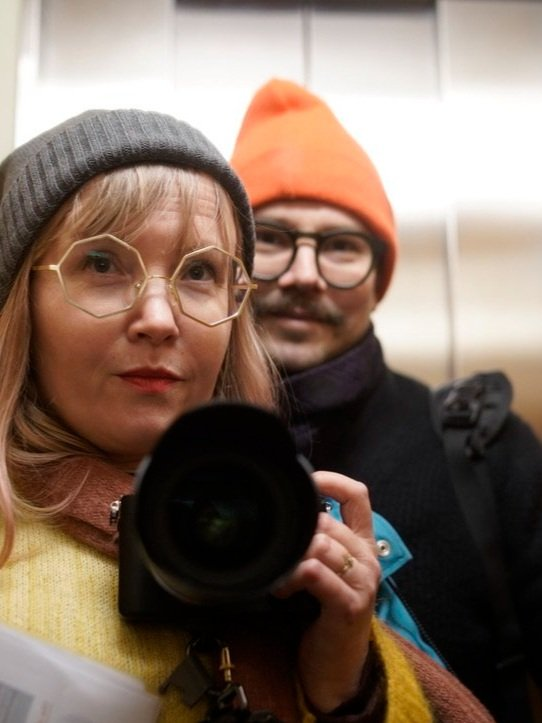
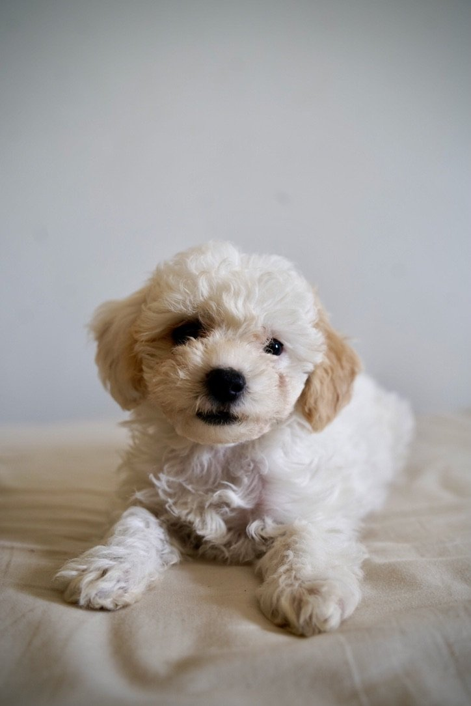

O, helga blog.
Om oss
O, helga podcast
Kaksikymmentäneljä sävyä Oi jouluyötä.
Vi hörde O helga natt tillsammans live i Stockholm 2015 och har letat efter bästa versionen allt sedan dess. Joka vuosi kuuntelemme noin kaksikymmentä eri versiota laulusta. I den här podcasten presenterar vi ett urval versioner - osa mielyttävämpiä kun toiset. Emme ole muusikoita, inte är vi musikvetare heller, men åsikter får vi ha. Tervetuloa kuuntelemaan!
Lyssna här:
Apple Podcasts

Johanna & Tomi
Vi är podcastens good cop och bad cop, Batman och Robin, Captain America och Iron Man. Vi har bakgrund i nästan alla konstformer, utom musik (litteraturvetenskap, bildkonst, mediakonst, mfl.). Lyhyesti: nämä kaksi ovat tämän sopan kokit.

Duri
Vuonna 2021 syntynyt villi-pilli. Osallistuu useimmiten podcastin tekoon taustamiehenä, toki välillä lähemmin tutkiessaan mikrofonia. Utöver podcastandet, sysslar Duri med sömn, mat, lek och influerande på instagram (@duriing_the_day).